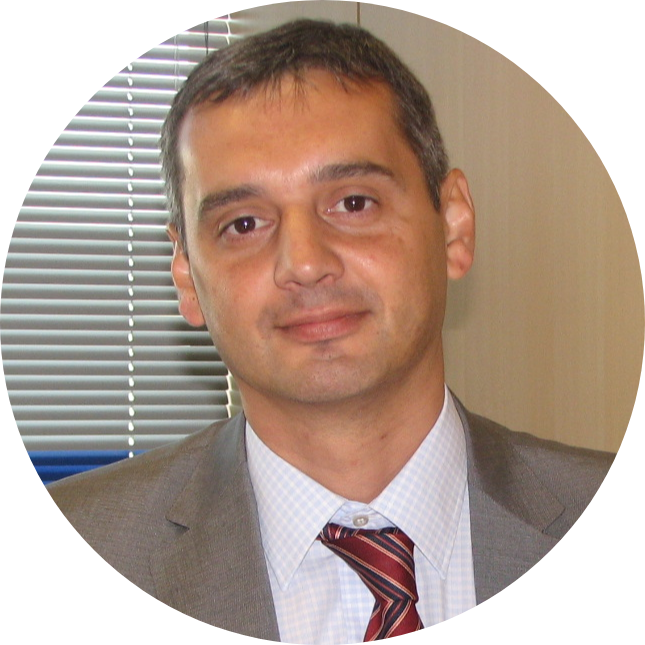

|  |
Fran MuñozIT Delivery Manager LinkedIn Profilefjmcassoni@yahoo.es, +34 690950958 |
I have an extensive career in which I have had the chance to deliver projects and services in different sectors and technologies under different roles. This gives me a broad and solid view of the IT sector and how it can contribute to business success.
My professional objective is to continue contributing to the transformation of IT organizations and landscapes in order to maximize the value that IT brings to the business, shifting the focus from traditional solutions to new data and digital solutions and paradigms.
I am in the position to do so from the inside of an organization as a CIO or IT Director or from the outside in IT consulting or technological companies in high level and solutioning roles.
| Dates | Company | Job Description |
|---|---|---|
| Jan 2019 - Mar 2020 | Capgemini | Delivery Head, CPRD&MALS Market Unit |
| Jan 2014 - Dec 2018 | Capgemini | Transformation, Industrialization and Modernization Head, Financial Services Spain |